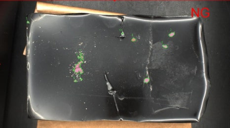

산업용 소재 · 본드
산업용 본드 이물 AI 검사
단단하게 굳어진 사각 형태의 산업용 본드 표면 이물을 광학 테스트와 AI 학습으로 검출하고, 스마트카메라 기반으로 구성한 사례입니다.

Project Summary
프로젝트 구성
- 산업
- 산업용 소재 · 본드
- 검사 대상
- 산업용 소재 · 본드
- 검사 목적
- 단단하게 굳어진 사각 형태의 산업용 본드 표면 이물을 광학 테스트와 AI 학습으로 검출하고, 스마트카메라 기반으로 구성한 사례입니다.
01 · Overview
프로젝트 개요
산업용 본드 표면의 작은 이물을 자동으로 검사하도록 구성했습니다. 작업자의 육안검사를 대체하기 위해 먼저 이물이 잘 보이는 촬영 조건을 확보한 뒤 실제 불량 이미지를 AI 학습에 사용했습니다.
02 · Problem
고객이 겪던 문제
작은 이물은 제품 표면과 반사 상태에 따라 보였다가 보이지 않았습니다. 장시간 반복 육안검사는 작업자 피로와 검사 편차가 발생할 수 있어 일정한 검사 기준이 필요했습니다.
작은 이물의 낮은 가시성
표면 반사 영향
육안검사 피로와 편차
다양한 이물 형태
03 · Solution
ASPEC 검사 구성
여러 조명 조건을 테스트해 작은 이물이 선명하게 촬영되는 영상을 확보했습니다. 이물이 포함된 이미지를 라벨링해 AI를 학습시켰으며, 별도 산업용 PC 없이 스마트카메라를 적용했습니다. 원격 접속으로 운영 상태와 설정을 확인할 수 있도록 구성했습니다.
04 · Inspection Process
검사 방법
제품 표면에 맞는 조명 테스트 이물 이미지 라벨링 및 AI 학습 스마트카메라 영상 취득·이물 검사 운영 상태 확인과 원격 설정 지원
- 01제품 표면에 맞는 조명 테스트
- 02이물 이미지 라벨링 및 AI 학습
- 03스마트카메라 영상 취득·이물 검사
- 04운영 상태 확인과 원격 설정 지원
05 · Gallery
실제 검사 화면 및 이미지
06 · Result
적용 결과
- 산업용 본드 표면 이물 자동검사
- 작업자 육안검사 의존도 감소
- 스마트카메라 기반 검사 구성
- 원격 유지보수 지원
07 · Technology
사용 기술 및 관련 제품
- AI 이물검사
- 스마트카메라
- 광학 설계
- 원격 유지보수
- AI 비전검사
- 머신비전 조명·렌즈
비슷한 검사 문제를 검토하고 계신가요?
검사 대상, FOV, WD, 택타임과 불량 유형을 알려주시면 카메라·렌즈·조명, 비전 소프트웨어와 설비 연동 구성을 함께 검토합니다.